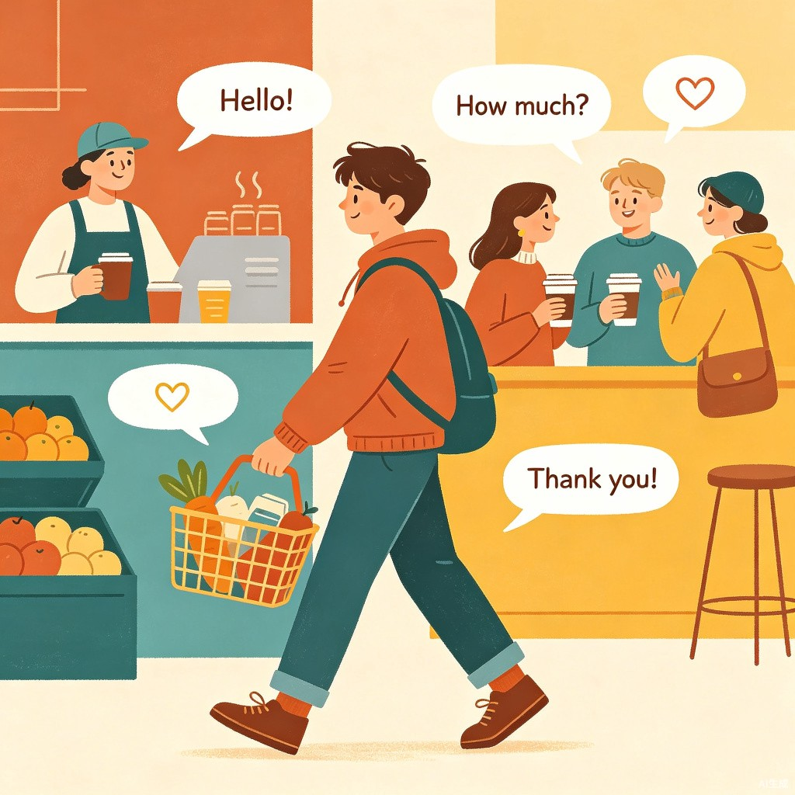
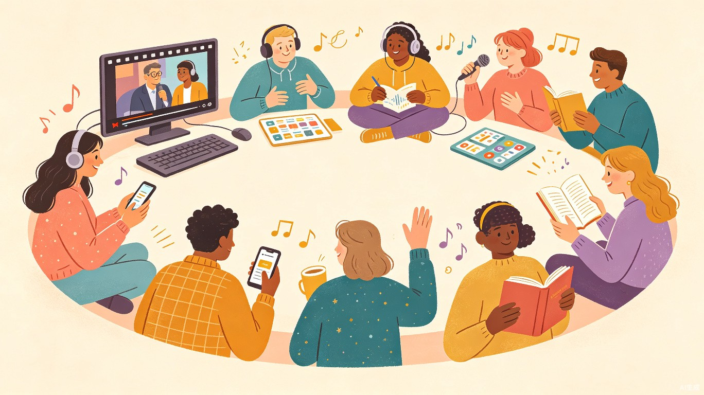

为什么兴趣是学好英语的关键
许多人在学习英语的过程中都会经历类似的困境：买了一堆教材，下载了若干App，但坚持不了几天就放弃了。根本原因在于 — 我们把英语当成了一项任务，而不是一种生活方式。
语言学习的科学研究表明，当学习内容与个人兴趣高度关联时，大脑的记忆留存率可以提高 3-5 倍。兴趣不仅降低了学习时的心理阻力，还触发了大脑中的多巴胺奖励机制，让我们在不知不觉中积累大量语言输入。
"The secret of getting ahead is getting started." — Mark Twain
（开始的秘密，就是开始。）
这份指南将从三个维度帮你重新爱上英语：晨间朗读建立语感基础，日常应用让英语融入生活，趣味方法持续保持好奇心。每一项都经过精心设计，确保低门槛、高趣味、可持续。
晨间英语朗读计划
早晨是语言学习的黄金时间。研究表明，人在晨间的注意力集中度和记忆力都处于一天中的高峰。每天只需 15-20 分钟的英语朗读，就能在一个月内显著提升语感和发音准确度。
在一个安静的清晨，打开一本英语故事书，让声音成为最好的老师
为什么选择"朗读"而非"默读"？
- 激活发音肌肉记忆：大声朗读能让口腔肌肉逐渐适应英语的发音方式，改善语调
- 多感官联动：眼睛看、嘴巴读、耳朵听，三个通道同时接收信息，记忆更深刻
- 建立语感：反复朗读能够内化英语的韵律和断句习惯，说英语时更加自然流畅
- 培养自信心：每天听到自己清晰地说英语，会逐步消除开口的恐惧感
朗读材料推荐
| 材料类型 |
推荐资源 |
难度 |
适合阶段 |
| 分级读物 |
Oxford Reading Tree、RAZ (Reading A-Z) |
⭐⭐ |
入门期（第1-2周） |
| 经典童话 |
The Very Hungry Caterpillar、Charlotte's Web |
⭐⭐⭐ |
成长期（第3-4周） |
| 短篇小说 |
O. Henry 短篇集、Roald Dahl 系列 |
⭐⭐⭐⭐ |
进阶期（第5周+） |
| 新闻简报 |
BBC Learning English、VOA Special English |
⭐⭐⭐ |
成长期+（持续使用） |
晨间朗读的标准流程
每日 15-20 分钟朗读流程
- 预读（2分钟）：快速浏览当天选段，标注不认识的单词，猜测意思
- 听读（3分钟）：播放音频材料，跟着朗读者的节奏听一遍，感受语调起伏
- 自读（8分钟）：自己大声朗读 2-3 遍，注意模仿发音和语调，重点练习难读的句子
- 查词与总结（3分钟）：查证标注的生词，在笔记本上记录 "单词+例句"，用一句话总结今天的故事
- 录音对比（2分钟，可选）：录下自己读得最好的一段，与原音频对比，标记需要改进的地方
高效小贴士
选择固定的时间点（比如起床后洗漱完毕、早餐前），将朗读与已有习惯绑定，形成"起床→洗漱→朗读"的固定链式动作。前 21 天最难坚持，可以使用打卡App（如"小打卡"）记录进度，看到连续打卡的天数会给你额外的动力。
日常生活英语实战
语言学习的终极目标不是考试拿高分，而是在真实生活中自如使用。将英语融入日常生活，是最自然、最有效的学习方法。你不需要出国，不需要报班，只需要在每天的场景中做一点小小的改变。

英语就在你身边 — 从超市购物到点一杯咖啡
七大日常英语场景
🏠 1. 起床与晨间自言自语
从睁开眼的第一刻起，试着用英语描述你的动作和想法：
你： "I'm so sleepy... Let me check the weather." — 好困啊，让我看看天气。
你： "What should I wear today? It's going to be warm." — 今天穿什么好呢？天气会很暖和。
你： "Time for breakfast! I'll make some coffee and toast." — 该吃早饭了！我来泡杯咖啡、烤个吐司。
目标：每天至少用英语"自言自语" 5 分钟，描述你正在做的事情。这是锻炼英语思维的最好方式。
☕ 2. 点餐与购物
在餐厅或超市时，练习用英语思考你需要什么：
你（内心独白）： "I'd like a latte with oat milk, please." — 我想要一杯燕麦拿铁。
你（内心独白）： "Do we need any eggs? Let me check the shopping list." — 我们需要鸡蛋吗？让我看看购物清单。
目标：每次购物或点餐时，在脑中用英语完成整个决策过程。
📱 3. 手机和社交媒体
- 把手机系统语言改为英语（至少设为英语键盘）
- 关注 3-5 个英语学习类的 Instagram / B站账号
- 每天用英语写一条社交媒体动态（哪怕只有一句话）
- 在搜索信息时，优先使用英文关键词（Google 搜索效果更好）
🎵 4. 听英语音乐与播客
通勤、运动或做家务时播放英语内容。推荐播客：
- 入门：6 Minute English (BBC) — 每期 6 分钟，话题轻松
- 中级：All Ears English — 美式口语，实用场景
- 进阶：The Daily (The New York Times) — 新闻类，提升听力和词汇
📺 5. 看剧和电影
这是最"无痛"的英语输入方式。关键技巧：
- 第一遍：中英字幕，享受剧情
- 第二遍：英文字幕，注意表达方式
- 第三遍：关闭字幕，挑战听力
- 遇到好用的表达，截图或记录在笔记本上
推荐剧目：Friends（日常口语必备）、Modern Family（家庭场景丰富）、The Office（职场英语）
📝 6. 英语日记
每天睡前用英语写 3-5 句话，记录今天发生的事情。不需要语法完美，关键是用英语思考：
"Today I tried a new restaurant near my office. The pasta was amazing! I also finished reading Chapter 5 of my book. Overall, a good day."
🗣️ 7. 找语伴或自言自语
- 使用 HelloTalk、Tandem 等App找语言交换伙伴
- 在镜子前用英语进行 3 分钟"小演讲"（可以是对某个话题的看法）
- 加入英语角或线上英语社群（如 Discord 中的英语学习频道）
循序渐进策略
不要试图一次性把所有场景都变成英语。第一周先选 2-3 个场景（比如起床自言自语 + 看剧），等习惯了再逐渐增加。关键是持续性，不是强度。
趣味学习法大盘点
除了朗读和日常应用，还有许多创意十足的方式能让英语学习变得有趣。以下是经过实践验证的高效趣味学习方法：

多种方法结合，让学习始终新鲜有趣
游戏化学习
🎮 英语词汇闯关游戏
将单词学习变成游戏挑战：
- Wordle — 每天 5 个字母的猜词游戏，锻炼拼写和词汇量
- Duolingo — 游戏化的闯关式学习，碎片时间即可使用
- Wordscapes — 字母拼词游戏，在解谜中扩展词汇
- 自制记忆卡片 — 使用 Anki 间隔重复法，科学记忆单词
每天 10 分钟的游戏时间 = 轻松掌握 5-8 个新单词。
兴趣导向学习
🎯 用英语学你感兴趣的东西
将英语作为工具，去获取你真正感兴趣的内容：
- 喜欢烹饪？在 YouTube 上跟着英语菜谱视频做饭（推荐频道：Tasty、Binging with Babish）
- 喜欢健身？跟着英语健身视频锻炼（推荐：Yoga with Adriene）
- 喜欢科技？阅读英文科技博客（如 The Verge、TechCrunch）
- 喜欢旅行？看英文旅游攻略和 vlog（如 Rick Steves、Mark Wiens）
- 喜欢化妆/时尚？观看英文美妆教程（如 Michelle Phan、James Charles）
当你为了内容本身而阅读/观看，英语就成了媒介而非负担。
沉浸式输入
🎧 创造"微型英语环境"
- 电脑系统切换为英语界面
- 社交账号关注 50% 以上的英语内容创作者
- 搜索引擎默认使用 Google 英文搜索
- 待办事项用英语书写（如 "Buy groceries", "Call Mom", "Finish report"）
- 闹钟标签用英语标注（如 "Wake up! It's a beautiful day!"）
创意输出
✏️ 让自己"制造"英语内容
- 写英文微博/朋友圈：每周至少发一条全英文动态
- 录制英语短视频：模仿 TikTok 上的英语学习者，做一个 30 秒的英语介绍
- 画思维导图：用英语关键词总结一篇英文文章
- 给朋友写英文邮件：即使是日常聊天，也可以尝试用英语
- 参加英语写作挑战：如 NaNoWriMo（11月全民小说写作月）
社交与挑战
🏆 让学习更有仪式感
- 21天挑战：连续 21 天完成一个英语小目标（如每天学 5 个单词），完成后奖励自己
- 100天阅读挑战：在 100 天内读完一本英文原版书
- 找学习伙伴：和朋友一起打卡，互相监督和鼓励
- 加入线上社群：Reddit 的 r/EnglishLearning、Discord 英语学习服务器
黄金法则：兴趣 × 持续 = 进步
最好的方法不一定是最流行的方法，而是你最愿意持续做下去的方法。尝试以上各种方式，找到让你最开心的 2-3 种，然后坚持做下去。每隔一个月可以尝试一种新方法，保持新鲜感。
4周行动计划
理论再多，不如行动。以下是为你精心设计的 4 周递进式学习计划，难度逐步提升，确保你在每个阶段都能感受到进步。
第 1-2 周 · 基础建立期
主题：建立习惯，找到感觉
这一阶段的目标不是"学多少"，而是"每天做"。建立稳定的晨间朗读习惯，开始在日常中嵌入英语元素。
- 晨间朗读：每天 15 分钟，选择分级读物（如 RAZ），只需通读，不做深度分析
- 日常英语：选择 2 个场景（推荐：起床自言自语 + 看英语剧），每天执行
- 趣味补充：下载 Duolingo，每天 10 分钟闯关
- 记录方式：用打卡App记录每天完成情况
第 3-4 周 · 能力成长期
主题：增加难度，扩大范围
习惯已经建立，现在开始"升级"内容难度和场景覆盖面。
- 晨间朗读：升级为经典童话或短篇小说，增加跟读模仿环节
- 日常英语：增加到 4-5 个场景，开始用英语写简短日记（每天 3 句）
- 趣味补充：开始听英语播客（推荐 6 Minute English），看剧时切换英文字幕
- 记录方式：建立"英语学习笔记本"，记录每日新学到的 3 个表达
第 5-8 周 · 深度沉浸期
主题：全面融入，输出表达
英语开始变成你生活的一部分，现在重点是增加输出和深度。
- 晨间朗读：阅读新闻简报或短篇小说，录音对比发音
- 日常英语：手机系统切换英语，尝试找语言伙伴进行每周 1-2 次对话
- 趣味补充：用英语学习一个你感兴趣的技能（烹饪、健身等），参加线上挑战
- 记录方式：每周写一篇 100 词左右的英语小作文，回顾本周学习心得
第 9-12 周 · 习惯固化期
主题：自然使用，长期保持
到这个阶段，英语已经不再需要"刻意学习"了 — 它就是你生活的一部分。
- 晨间朗读：自由选择感兴趣的英文材料（博客、小说、新闻），享受阅读本身
- 日常英语：大部分日常场景自然使用英语思考，社交媒体 50% 使用英语
- 趣味补充：开始阅读一本完整的英文原版书，参加英语社群活动
- 记录方式：建立"英语成长档案"，定期回顾自己的进步
开始你的英语之旅
"A different language is a different vision of life." — Federico Fellini
（一门不同的语言，就是一扇看世界的不同窗户。）
记住，学习英语不是一场百米冲刺，而是一场马拉松。不需要每天学很多，但需要每天都在学。哪怕只是清晨 15 分钟的朗读，哪怕只是用英语给自己说了一句"Good morning"，都算数。
从今天开始，选择你最感兴趣的方法，设定最小的第一步，然后 — Just do it!
今天的行动清单
- 选择一个适合自己水平的朗读材料
- 设定明天的晨间朗读时间
- 挑选 2 个日常英语场景开始尝试
- 下载 1-2 个推荐工具
- 找一个朋友分享你的学习计划，互相监督